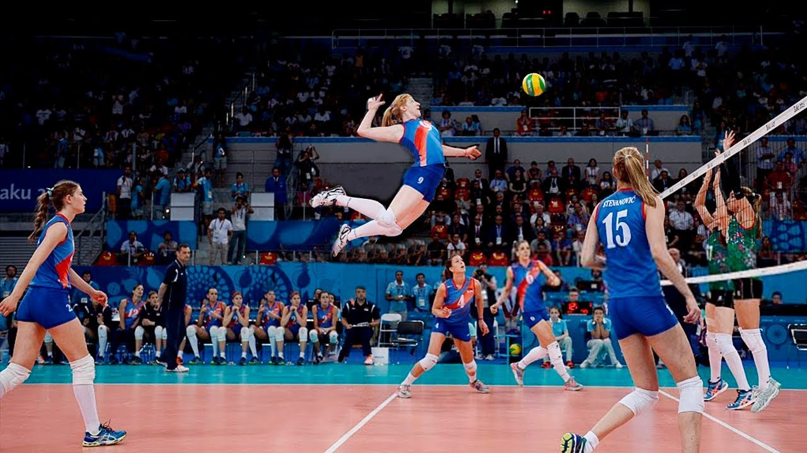

My Hobby
BSc Computing-uni Northampton
Bedford College Learning Centre
London School of Informatics
"Operating Systems: Windows, MacOS X,
Languages:Java | JavaScript, | HTML | MS Visual Studio Code
Databases: SQL Server Testing Methodology: Agile, Waterfall
Microsoft Office Tools: Microsoft Access, Excel, Outlook, PowerPoint, Visio
Browser: Google Chrome, Mozilla Firefox, Internet Explorer, Safari, Opera
Web Testing Tools: HTTP, Xml Git/ GitHub, Git Clone"
"A BSc Computing undergraduate, keen to build more computing skills.
Currently developing through different modules in my course of study
such as: Problem Solving and programming, Web development,Computer Systems
and Database. Optimistic about building a career in IT and Quality Assurance,
persevering until success is reached. I am a diligent
a reliable person with
good interpersonal skills. Armed with good communication,
organizational, multitasking
and problem-solving skills,able to liaise with the key customer contacts and vendors to
resolve software issues. Presently looking for a suitable position with an ambitious company".